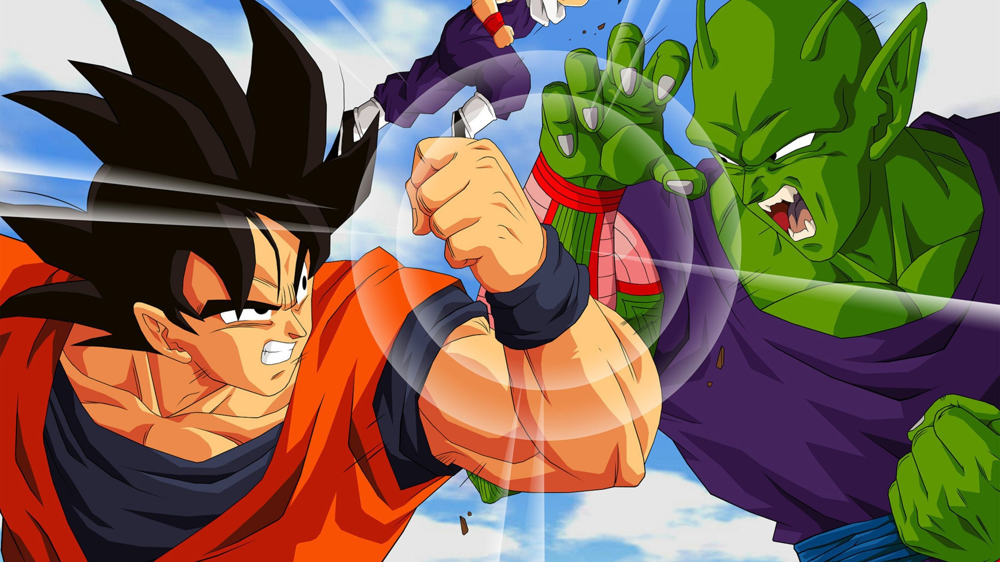

Even though most people view Piccolo as a monster, Goku and Gohan always viewed him as a friend. This leads to Piccolo's ultimate sacrifice, killing himself for the safety of Gohan. This us one of the greatest moments in Dragon Ball, and the reason being is because it is so relatable.
Another common modern day struggle is rediscovering our cultural roots. Piccolo is big, he's green, and he looks much different than everyone else. He has trouble connecting with other regular people. What happens to those that are left to solitude, then gain a friend? Their life changes for the better, they become happier, they gain even more friends, and their hatred for their situation changes.